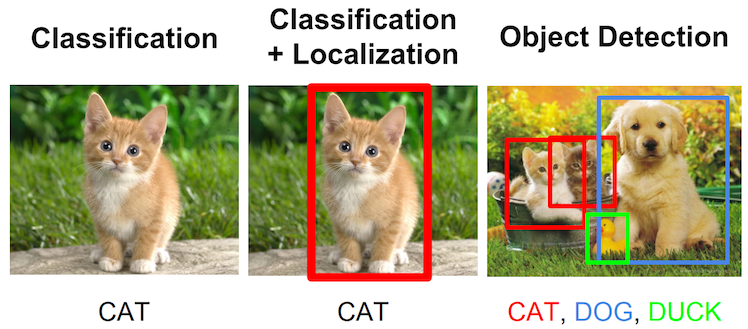

LPIRC CVPR 2018 Track 2 Description
Description:
Track 2 of LPIRC CVPR 2018 is a public competition for accurate and low power consumption image classifiers. Participants of track 2 will be evaluated based on both accuracy and power usage. Nowadays, cameras have become available in many embedded and mobile systems, including smartphones, wearable devices and aerial robots. It is desirable to have the capability of detecting objects in the images by computers. At the meantime, energy is limited in mobile systems so energy conservation is important.
In order to measure the energy consumption, we use jetson TX2 as a unified platform. We would measure the power consumption of your model on your own TX2. This track encourages system-level improvements (e.g., better cache performance or voltage scaling). Track 2 uses Caffe2 because of its high performance and mobile deployment, and flexibility for future applications.
Requirement:
There are two main requirements for Track 2:
1. Participants must use Caffe2 (https://caffe2.ai/) to build their image detection and classification systems. For example, the official code of Faster RCNN is written by Caffe, our participants should transfer it to Caffe2.
2. Participants must use Nvidia TX2 (https://developer.nvidia.com/embedded/buy/jetson-tx2) as their platform.
Submission:
The participants must submit their caffe2 model with an output CSV file with the following format:
1 159 0.884664 119.976089 104.969680 446.638915 196.629038
3 134 0.956790 84.127186 80.494650 495.113390 265.696301
4 26 0.196648 140.979062 164.311968 355.728417 266.404466
5 134 0.835819 195.385994 108.760951 322.980318 239.285166
…
The meaning of each row is:
Image-name, Class-id, confidence, ymax, xmax, xmin, ymin. For more information, refer to https://github.com/luyunghsiang/LPIRC/blob/master/client/source/client.py
Evaluation:
Submissions will be evaluated based on the matrix as follows:
Score =
1. mean average precision (mAP)
The detection system can detect multiple objects in an image. We use mean average precision (mAP) as recognition accuracy. Specifically, participants’ detection systems classify different classes and recognize objects, draw the bounding box and report to the referee system. The referee system can be downloaded here: https://github.com/luyunghsiang/LPIRC

2. Energy consumption
Energy consumption part measures the participants’ hardware power usage without its own battery. Every participant will connect their TX2 to the powermeter offered by the organizer. This powermeter will provide AC/DC power supply and calculate the total energy consumption.
Prize:
Timeline: